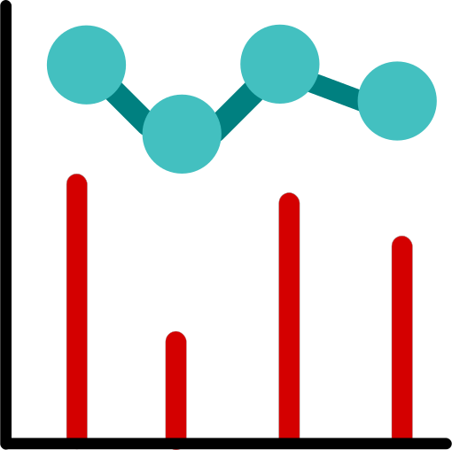
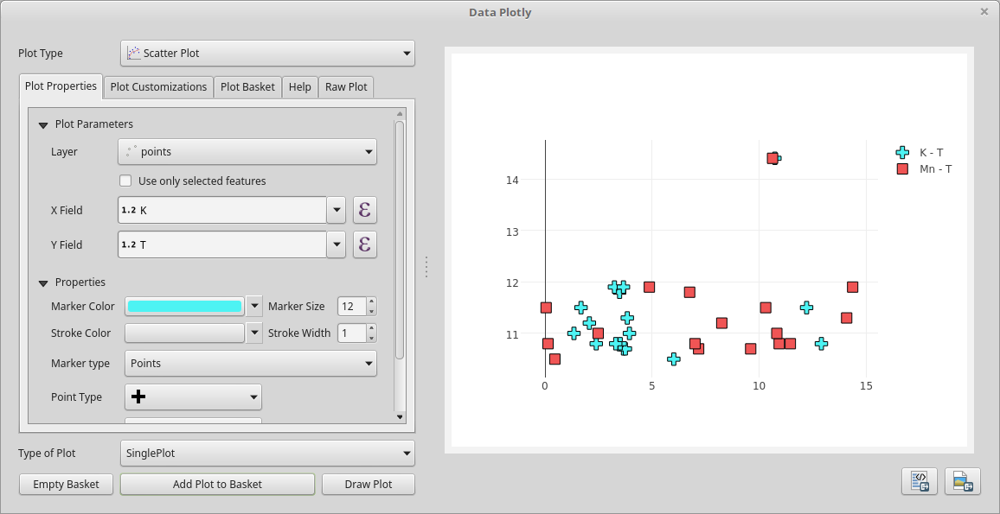
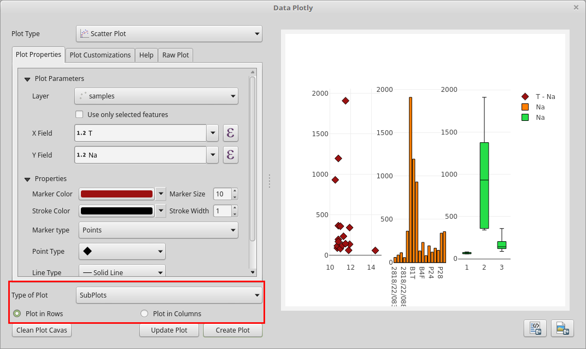
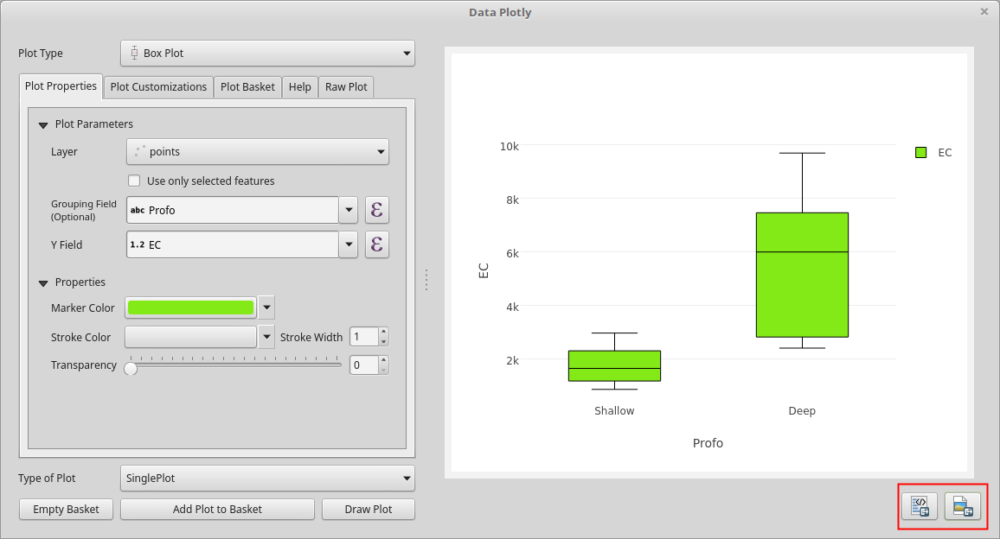

Utilizzo basico di DataPlotly¶
L’interfaccia di DataPlotly è stata pensata in modo da essere semplice, ma anche completa con molte opzioni e personalizzazioni disponibili.
Creare un grafico è davvero semplicissimo: scegli il tipo di grafico, il layer, i campi x e y, colori, etichette, ecc. e premi Crea grafico. Il grafico viene immediatamente mostrato.
Se vuoi modificare qualche impostazione, per esempio il colore del simbolo o la sua dimensione, il campo x, basta farlo e cliccare sul pulsante Aggiorna grafico: il grafico viene cosi immediatamente aggiornato.
DataPlotly è un pannello agganciabile ovunque nell’interfaccia di QGIS. È composto da 5 categorie:
 impostazioni fondamentali del grafico
impostazioni fondamentali del grafico
personalizzazioni aggiuntive del grafico
{kind=link}
 grafico
{kind=link}
 guida utente per ogni tipo di grafico
guida utente per ogni tipo di grafico
 codice html del grafico
codice html del grafico
{kind=link}
Aggiungi un grafico¶
Il flusso di lavoro di DataPlotly è molto lineare:
- scegli il tipo di grafico (1)
- imposta il layer e i campi che vuoi utilizzare (2)
- mostra il grafico con il pulsante
Crea grafico(3). Il grafico verrà automaticamente mostrato.
{kind=link}
Puoi cambiare qualche impostazione del grafico e cliccare sul pulsante Aggiorna per aggiornare il grafico con i cambiamenti.
Se vuoi ripartire da zero basta cliccare il pulsante Pulisci grafici e tutti i grafici saranno eliminati.
Multi grafici¶
DataPlotly permette la creazione di molti grafici diversi. Questi possono essere sovrapposti (grafico singolo) oppure ogni grafico può essere caricato in righe e colonne separate (multi grafico).
Sovrapposizione grafici¶
Puoi aggiungere quanti grafici vuoi e caricarli nella stessa vista. Le tipologie di grafici possono essere diverse cosi come il layer e i campi.
Nota
il risultato può essere molto strano in funzione del tipo di grafico scelto e dei campi scelti.
Per aggiungere altri grafici basta che ripeti le operazioni Aggiungi un grafico scegliendo una tipologia di grafico diversa oppure un layer o dei campi diversi, ecc..
Nella seguente figura, stessa tipologia di grafico e differenti campi dello stesso vettore:
{kind=link}
La seguente figura mostra 2 tipologie di grafici diversi sovrapposti nella stessa vista:

Multi grafici¶
Puoi anche scegliere di dividere i grafici in viste separate. Questo è particolarmente utile quando le scale di valori sono molto diverse o quando la sovrapposizione di dati o grafici diversi risulta troppo caotica.
Basta che scegli la tipologia di grafico e i campi come descritto nella sezione Aggiungi un grafico ma devi specificare anche il parametro Multi grafico dal menu a tendina e scegliere se preferisci creare i grafici in righe (predefinito) o in colonne.
La seguente figura mostra grafici in righe e colonne:
{kind=link}
{kind=link}
Salva grafico¶
Salvare un grafico, tecnicamente la vista del grafico, è molto semplice. Puoi scegliere di salvare il grafico come immagine png oppure come file html.
Nota
salvare l’immagine come file html mantiene l’interattività del grafico
Basta cliccare sul pulsante corretto e scegliere il percorso dove vuoi salvare l’immagine, sia statica che interattiva.
{kind=link}
Codice del grafico¶
Oltre al salvataggio del grafico come immagine o come file html (vedi Salva grafico)) puoi anche copiare il codice html del grafico e includerlo da qualche altra parte.
Un’ottima scelta è copiare/incollare il codice in una cornice html del compositore di stampe di QGIS.
Per copiare il codice del grafico, dopo la creazione del grafico stesso, vai nella scheda Codice del grafico: quindi vedrai una lunga stringa di caratteri. Fai click col tasto destro e scegli Seleziona tutto, poi sempre col tasto destro scegli Copia (puoi usare anche le scorciatoie da tastiera Ctrl+A per selezionare tutto e Ctrl+C per copiare):
{kind=link}
Ora hai il codice copiato in memoria, devi solo scegliere dove incollarlo.
Nel seguente esempio, il codice html è stato copiato nella cornice html del compositore di stampe:
- apri il compositore di stampe e aggiungi una
cornice html(1) - incolla il codice nello spazio
Sorgente(2) - aggiorna il codice
html(3) - il risultato viene mostrato nella cornice (4)

Consigli e trucchi¶
Usare le espressioni¶
DataPlotly supposta tutti le tipologie di campi (interi, decimali, testo, ecc…) ed elabora i dati in modo che possano essere visualizzati coerentemente.
Grazie alle API di QGIS e ai widget di Qt puoi usare anche le Espressioni invece che i singoli campi dei vettori (per esempio campo + 10, campo1 * campo2, ecc..).
Puoi usare il costruttore di espressioni per aggiungere espressioni complesse (per esempio``(campo1 + 10) * (campo2 * 10)``) o puoi inserire direttamente l’espressione nella casella. Le espressioni sono valutate al volo, quindi se la stringa è rossa, l’espressione non è valida.

Usa solo le geometrie selezionate¶
Un’altra opzione molto utile è quella di usare solamente le geometrie selezionate del vettore.
Clicca la casella Usa solo le geometrie selezionato e solo queste verranno considerate durante l’elaborazione.